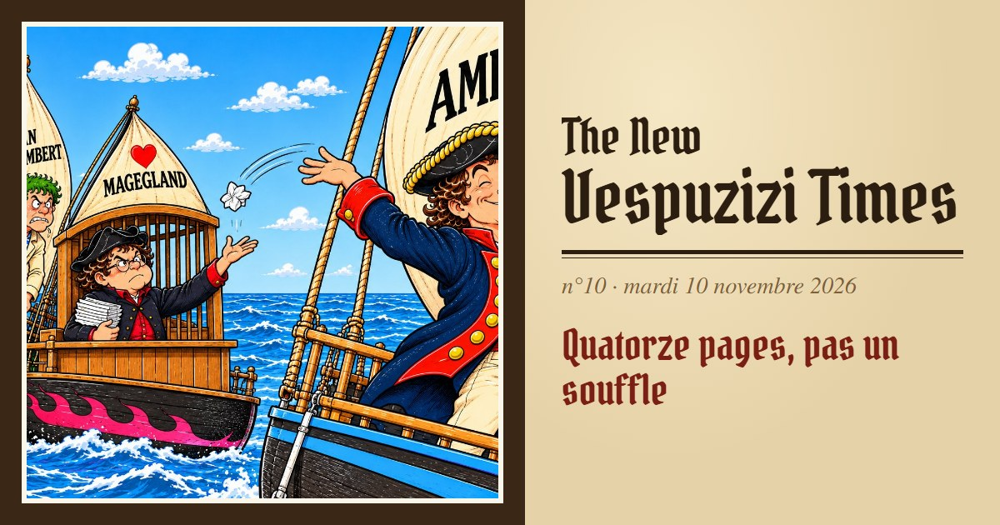
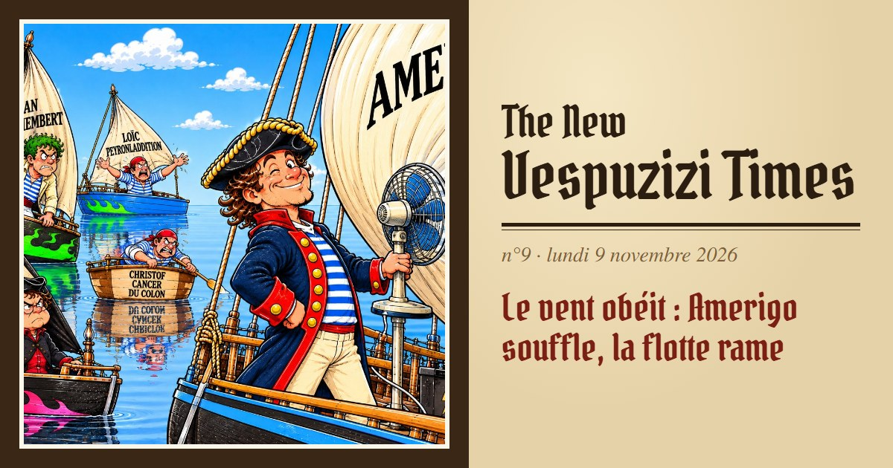
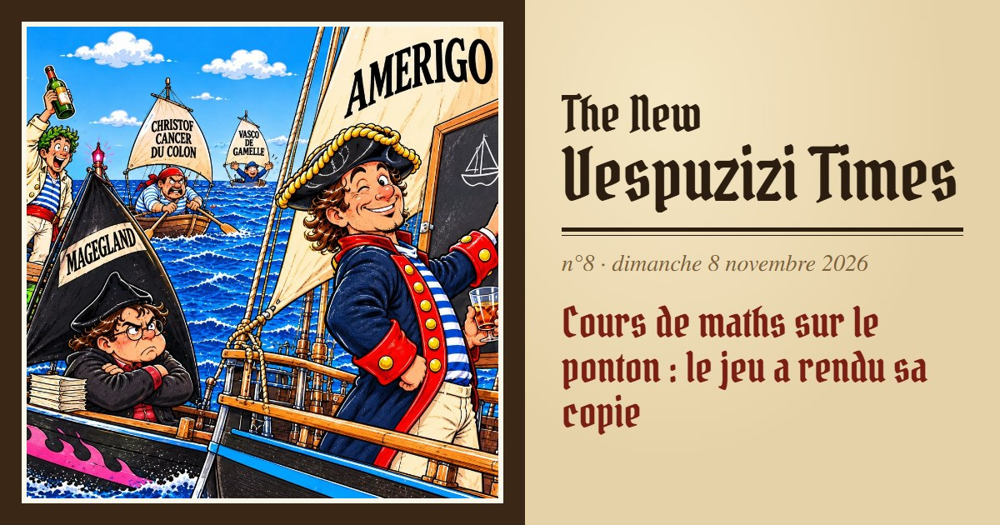
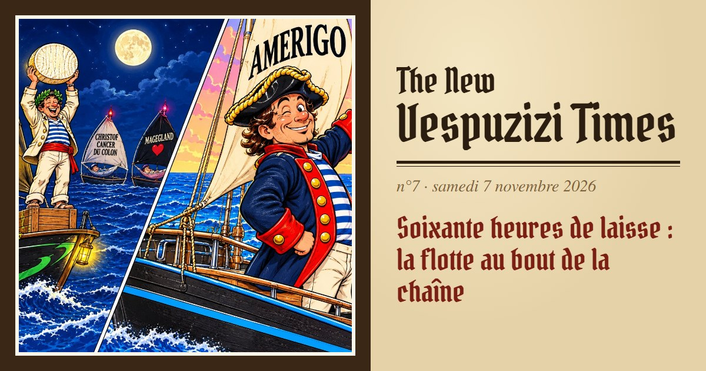
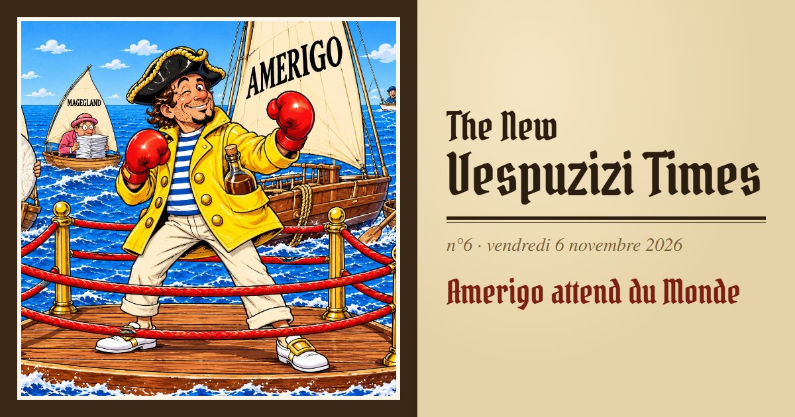

The NewVespuzizi Times
Le seul quotidien lu à la barre · Saint-Malo → Pointe-à-Pitre
Les numéros

n°10mardi 10 novembre 2026Quatorze pages, pas un souffle
n°9lundi 9 novembre 2026Le vent obéit : Amerigo souffle, la flotte rame
n°8dimanche 8 novembre 2026Cours de maths sur le ponton : le jeu a rendu sa copie
n°7samedi 7 novembre 2026Soixante heures de laisse : la flotte au bout de la chaîne
n°6vendredi 6 novembre 2026Amerigo attend du Monde